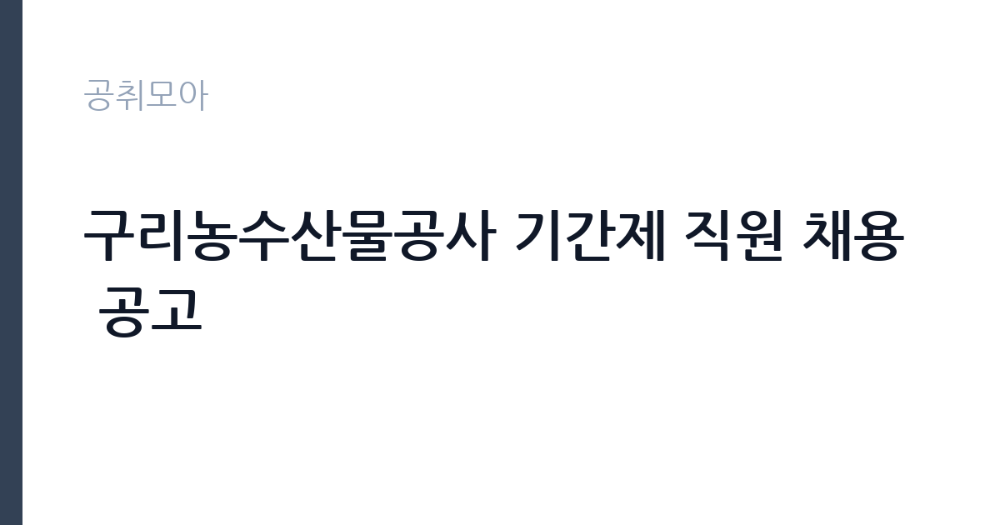

[공공기관] 구리농수산물공사 기간제 직원 채용 공고
구리농수산물공사 · 경기 · 마감 2026-11-15 (D-11) · 출처 나라일터

한눈에 보는 모집 조건
| 기관 | 구리농수산물공사 |
|---|---|
| 공고명 | 구리농수산물공사 기간제 직원 채용 공고 |
| 고용형태 | 기간제 |
| 근무지 | 경기 |
| 게시일 | 2026-11-04 |
| 마감일 | 2026-11-15 (D-11) |
지원자격, 이렇게 읽으세요
- 기간제 직원 1명
- 접수 ~2026-11-15 마감
- 세부 조건은 원문 공고문 확인
기간제 근로자는 근로계약 기간이 정해진 신분입니다. 계약 기간과 갱신 가능 여부가 근로계약서에 명시되며 기간 만료 시 근로관계가 종료됩니다. 결원 보충이나 특정 사업 기간에 맞춰 채용되는 경우가 많아 업무 범위가 명확합니다. 이번 공고는 구리농수산물공사에서 직접 진행하는 자체 전형으로, 응시자격과 제출서류는 공고문에 항목별로 제시됩니다. 이번 공고는 2026년 하반기 기간제직원 1명을 뽑는 채용으로, 응시원서와 자기소개서, 취업예정확인서 등 정해진 서식을 사용해야 합니다. 모집분야와 자격요건은 공고문 붙임 자료에 정리되어 있으므로 원문을 확인해야 합니다. 접수는 2026년 11월 4일부터 15일까지이고, 서류전형과 면접을 거쳐 선발하는 절차가 일반적입니다. 기간제 채용이므로 계약 기간과 근무 시작일을 먼저 확인하십시오. 공사는 지방공사로 채용과 인사 규정을 자체적으로 운영합니다. 서류는 접수 마감 이후 보완이 되지 않으므로 자격 요건과 증빙 서류를 마감 전에 모두 갖춰야 합니다. 공고문에 명시된 우대 사항은 해당 여부를 확인해 증빙을 첨부해야 가점이 반영됩니다. 공고문의 응시자격 표를 보면 자격 항목이 여러 줄로 나뉘어 있으므로, 각 줄을 하나씩 체크하며 본인 해당 여부를 표시해 두면 누락을 줄일 수 있습니다.
이 공고의 포인트
이 공고의 첫 번째 포인트는 고용 형태입니다. 계약 기간이 정해져 있어 근무 종료 시점이 명확합니다. 그만큼 짧은 기간에 어떤 실적을 남길지가 중요해집니다. 두 번째는 업무 범위가 명확하다는 점입니다. 도매시장 운영 지원(기간제) 직무로 채용되므로 배치 이후 담당 업무가 크게 흔들리지 않습니다. 세 번째는 근무지입니다. 경기 지역 근무로 접근성은 좋지만 그만큼 지원자가 몰리는 지역이므로 경쟁률을 넉넉히 잡아야 합니다. 선발 절차가 단순한 편이어서 서류와 면접 준비에 집중할 수 있습니다. 다만 선발 인원이 1명으로 많지 않아 자격을 갖춘 지원자가 몰리면 경쟁률이 높아질 수 있습니다.
전형은 어떻게 진행되나
전형은 서류심사와 면접심사를 기본으로 하고 직무에 따라 필기나 실기, 체력검정이 추가됩니다. 서류 단계에서는 응시자격 충족 여부와 제출서류 형식을 확인하며 이 단계에서 탈락하는 지원자가 적지 않습니다. 면접은 직무 이해도와 경험을 확인하는 방식으로 진행되고 발표는 개별 통보나 홈페이지 게시로 이뤄집니다. 최종합격 이후에는 결격사유 조회와 채용 신체검사가 이어지며 이 절차에서 문제가 확인되면 합격이 취소될 수 있습니다. 구체적인 전형 단계와 배점은 공고문에 표로 정리되어 있으니 원문을 기준으로 준비하십시오. 서류 단계에서 요건을 충족하지 못하면 이후 전형을 준비할 기회가 없으므로, 제출 전 요건 대조를 한 번 더 하는 것이 좋습니다.
이런 분께 추천해요
- 현장 운영·고객 응대 경험이 있는 분
- 새벽·현장 근무 일정을 수용할 수 있는 분
- 정해진 서식으로 기한 내 접수할 수 있는 분
지원 전 체크리스트
- 응시자격 요건과 경력 기준을 충족하는가 — 경력은 증명서로 입증해야 합니다
- 계약 기간과 근무 시작일·종료일을 확인했는가
- 제출서류 목록을 모두 준비했는가 — 누락 시 서류 단계에서 탈락합니다
- 접수 마감 2026-11-15 이전에 접수 방식을 확인해 제출했는가
모집 일정과 제출 타이밍
공고 게시일은 2026-11-04, 접수 마감은 2026-11-15입니다. 준비 기간은 약 11일로 서류 준비와 자격 증빙을 함께 처리하기에는 넉넉하지 않은 편입니다. 첫 이틀 안에 공고문과 첨부 서식을 내려받아 요건을 확인하고 남은 기간에 증빙 서류를 발급받는 일정이 현실적입니다. 면접은 서류 합격자 발표 후 짧은 간격으로 진행되는 경우가 많으므로 서류 제출과 동시에 면접 준비를 시작하는 편이 안전합니다. 마감일에는 접수 시스템이 몰리므로 하루 전까지 제출을 마치는 것이 좋습니다. 마감 이후에는 어떤 사유로도 접수가 인정되지 않으므로 하루 전 제출을 목표로 하십시오. 경기 지역 근무지는 사업소나 시설이 외곽에 있는 경우가 많아 차량 통근 가능 여부를 확인해야 합니다. 마감까지 2주 안팎이 있어 준비할 시간은 있지만 미루면 촉박해집니다. 선발 인원이 한두 명 수준이라 지원자 개개인의 서류 완성도가 그대로 평가에 반영됩니다.
직무 이해하기: 공공기관
구리농수산물공사는 구리도매시장을 운영하는 지방공사입니다. 기간제 직원은 경매와 거래 질서 관리, 시장 시설 운영, 고객 지원 가운데 배치된 부서의 실무를 맡습니다. 도매시장 업무는 새벽 경매 시간대에 맞춰 움직이므로 이른 출근이 필요한 자리가 있습니다. 거래 자료와 경매 결과를 정리하고, 상인과 구매자, 방문객의 문의에 대응합니다. 시장 환경 정비와 안전 점검, 행사 지원이 붙기도 합니다. 공사는 도매시장 이전과 디지털 플랫폼 구축을 추진하고 있어 관련 사업 지원 업무도 생깁니다. 업무 매뉴얼과 지침이 문서로 정리되어 있어 절차를 익히면 반복 업무는 빠르게 손에 붙습니다.
자기소개서 작성 팁
지원서는 공사의 사업을 어느 정도 알고 있는지 보여주는 데서 출발하는 것이 좋습니다. 구리도매시장의 기능과 공사의 주요 사업을 한 문단으로 정리하고, 본인 경험을 그 업무에 연결하십시오. 기간제라는 조건을 인정하고 계약 기간 동안 무엇을 해내겠다는 계획을 제시하면 성실성이 드러납니다. 정해진 서식을 쓰지 않으면 접수 단계에서 반려될 수 있으니 서식 확인을 먼저 하십시오. 문항별 글자 수 제한을 먼저 확인하고, 각 문항의 첫 문장에 결론을 배치하는 방식이 읽기 쉽습니다. 지원 동기는 기관의 어떤 사업에 기여하겠다는 한 문장으로 시작하고, 이어서 본인의 경험을 근거로 붙이십시오. 감점을 피하려면 다른 기관에 보낼 수 있는 범용 문장을 그대로 쓰지 않는 것이 중요합니다. 기관 이름과 사업명이 문장 안에 자연스럽게 들어가야 준비도가 드러납니다.
면접 준비 포인트
면접에서는 시장 운영에 대한 이해와 응대 태도를 확인합니다. 새벽 근무나 현장 근무를 감당할 수 있는지, 상인과 구매자 사이에서 갈등이 생겼을 때 어떻게 조율할지 묻습니다. 공사의 사업 방향인 도매시장 이전이나 디지털 전환에 대해 알고 있는지도 질문 대상입니다. 이전 근무지에서 반복 업무를 어떻게 정리했는지 구체적으로 답하십시오. 답변은 상황, 판단, 조치의 순서로 정리하면 전달이 분명해집니다. 모르는 질문에는 모른다고 밝히고 확인 방법을 제시하는 편이 억지 답변보다 낫습니다. 마지막에는 근무 의사와 함께 2026-11-15 이후 일정에 언제든 응할 수 있다는 점을 전달하십시오. 본인 경험을 말할 때는 기간, 역할, 결과를 순서대로 정리해 두면 질문이 바뀌어도 활용할 수 있습니다.
급여·근무조건 읽는 법
지방공사 기간제 직원의 보수는 공사의 기간제 임금 기준을 따르며, 월 급여와 계약 기간이 근로계약서에 명시됩니다. 기본급에 정액급식비나 명절 관련 수당이 붙는 구조이므로 월 급여만으로 비교하기보다 계약 기간 전체 금액으로 계산하는 편이 정확합니다. 구체적인 금액은 공고문 처우 항목에서 확인해야 하며, 확인되지 않은 수치는 이 글에서 제시하지 않습니다. 2026년 적용 최저임금은 시급 10,320원, 월 환산 2,156,880원(주 40시간·209시간 기준)입니다. 고용노동부 고시 제2025-47호로 확정된 금액입니다. 공고문에 금액이 제시되지 않은 항목은 원문 보수표나 처우 설명에서 확인해야 하며 확인되지 않은 수치는 쓰지 않는 것이 원칙입니다. 비교할 때는 월 급여뿐 아니라 상여·명절휴가비·복지포인트·초과근무수당까지 포함한 연간 총액으로 계산하십시오. 기간제라면 계약 기간 동안의 총액을, 무기계약이라면 호봉 상승과 정년까지의 누적 소득을 기준으로 판단하는 편이 정확합니다.
자주 묻는 질문
- 선발 인원은 몇 명인가요?
공고문 기준 1명입니다. 직종별로 인원이 나뉘는 경우가 있으니 모집분야 항목을 함께 확인하십시오. - 근무지는 어디인가요?
경기 지역의 구리농수산물공사 소속 근무지입니다. 세부 주소와 출퇴근 조건은 원문 공고문에서 확인할 수 있습니다. - 보수는 얼마인가요?
채용 신분(기간제)과 기관 임금 규정에 따라 정해지며 구체적인 금액은 공고문 처우 항목에 제시됩니다. 금액이 공개되지 않은 경우에는 원문의 보수표를 확인하십시오.
함께 보면 좋은 공고
[공공기관] 한국농어촌공사 영산강사업단 공무직(청소원) 보훈 장애 제한경쟁 채용공고 — 마감 2026-11-20[공공기관] 2027년 1차 박사후연수연구원, 석사후연수연구원 및 위촉연구원 공개채용 — 마감 2026-11-20[공공기관] 서울대학교치과병원 2027년 상반기 정규직(원무직) 채용 공고 — 마감 2026-11-18출처: 나라일터 공개정보를 바탕으로 공취모아가 정리한 안내글입니다. 모집 조건·일정은 변경될 수 있으니 지원 전 반드시 원문 공고문을 확인하세요. 본 글은 정보 제공용이며 합격을 보장하지 않습니다.